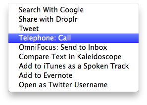
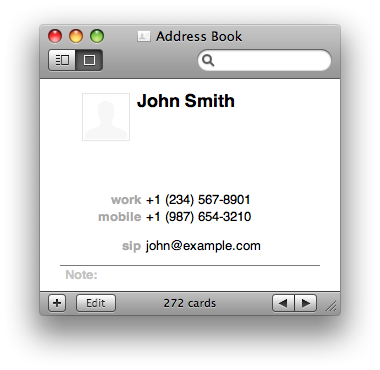

How to enable debug information
Quit Telephone, open Terminal and run:
$ defaults write com.tlphn.Telephone LogLevel -integer 4Launch Telephone, reproduce the problem, quit Telephone, and examine the log file.
To set the default log level:
$ defaults delete com.tlphn.Telephone LogLevelWhere is the log file?
Version 1.0.4 and earlier: ~/Library/Application Support/com.tlphn.Telephone/Telephone.log.
Version 1.1 and later: ~/Library/Containers/com.tlphn.Telephone/Data/Library/Application Support/com.tlphn.Telephone/Telephone.log.
The log file is being overwritten every time Telephone starts.
Problem with outgoing calls when using FritzBox
Enable “Use only G.711 codec” in sound preferences.
Another party hears echo
The most common reason is that another person’s voice from your headphones reaches your microphone. The worst case scenario here is to use internal speakers with the internal microphone. If you don’t have a headset, try to use any headphones with the internal mic. Closed headphones would be even better. But you can help Telephone significantly increase the sound quality using a decent headset. I suggest a USB headset.
How to send tone signals
Just press digits on the keyboard when the call window is active. Asterisk (*) and number sign (#) are also allowed.
Why sending tone signals isn’t working?
When calling regular phones, sending tone singnals must be supported by the VoIP gateway. If the gateway does not support well-known standards (RFC 2833 or SIP INFO DTMF), the signals will not be sent.
How to place a call on hold
Press H in the active call window.
How to mute the microphone during a call
Press M in the active call window.
How to make sip: and tel: links
Don’t use slashes after the URL scheme, for example:
Call John Smith: <a href="sip:user@example.com">Call John Smith</a>+1-234-567-8901: <a href="tel:+1-234-567-8901">+1-234-567-8901</a>Unfortunately, version 1.0.4 has a bug that prevents Telephone from dialing the opened URL if Telephone was not launched at the moment when URL was opened. But if Telephone is running at the moment, it should make a call to the opened URL.
How to make a call from a text selection in another application
You need to enable Telephone: Call in OS X Services. Go to System Preferences > Keyboard > Keyboard Shortcuts > Services > Text. Check Telephone: Call and optionally add a keyboard shortcut. Now if you select a text in some application, then right-click on it and go to the Services section, there should be Telephone: Call there. If you click it (and Telephone is running), Telephone should use the selected text as a call destination. It is possible to use a keyboard shortcut instead of clicking and navigating to the Services menu.

How to close missed call windows automatically
$ defaults write com.tlphn.Telephone AutoCloseMissedCallWindow -bool YESWhere can I store SIP addresses?
You can save SIP addresses (user@example.com) in Address Book as an email with the custom label “sip”. Telephone autocompletes such addresses and Address Book plug-in shows “Dial with Telephone” for them.

What codecs are supported?
- G.711 family codec (PCMA, PCMU);
- Speex/8000 (narrowband), Speex/16000 (wideband), and Speex/32000 (ultra-wideband);
- iLBC;
- GSM;
- L16 family of codecs.
How to enable voice activity detection
$ defaults write com.tlphn.Telephone VoiceActivityDetection -bool YESTimeout connecting to Asterisk behind VPN
Try setting “nat = yes” in Asterisk to reply to the actual IP address the request came from. (With “nat = no” Asterisk sends the reply to the address from the Contact field.)
Another approach is to set your public address for SIP manually:
$ defaults write com.tlphn.Telephone TransportPublicHost But if your VPN server doesn’t assign you the same IP address every time you get connected, this could be inconvenient.
I’m getting ‘423 Interval Too Brief’
You should increase the re-registration time interval in the advanced account settings according to your registry server configuration. If you’re not sure what the proper value is, try 600, 1200, or 1800.